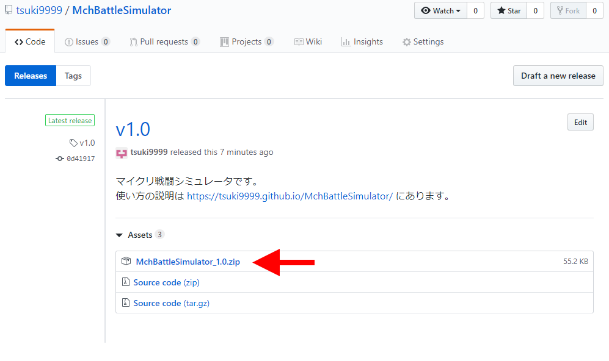

上のリンクをクリックすると、このようなサイトが表示されます。
矢印のリンクをクリックしてダウンロードしてください。
ダウンロードできたらZIPファイルを展開し、適当な場所に保存してください。
チーム編成専用ページで編成を行うと、
ページ最下部にIDと能力値を示す数値が表示されます。
数値をすべてコピーして、それをダウンロードして展開してできたフォルダの中にあるheroes.txtというファイルに貼り付けてください。
もしくは、スプレッドシート上で編成する方法もあります。
使いやすい方で編成してください。
シミュレータを起動するには、ダウンロードして展開したフォルダの「MchBattleSimulator_(バージョン名).exe」を
ダブルクリックしてください。
（コマンドプロンプトを使い慣れている方はそちらからどうぞ）
シミュレータが起動すると真っ黒な画面が開くので、
そこに実行したいバトル数を半角数字で入力してください。
（100~1000くらいがおすすめです）
指定したバトル数が終了すると、Attack側から見た勝ち数と負け数が表示されます。
最後に「続行するには何かキーを押してください」というメッセージが表示されるので、
何かキーを押すと終了します。
シミュレーションごとの記録は、シミュレータがあるフォルダに battle_log_(番号) という名前で保存されます。
１回のシミュレーションにつき、最初の10戦だけ記録されます。